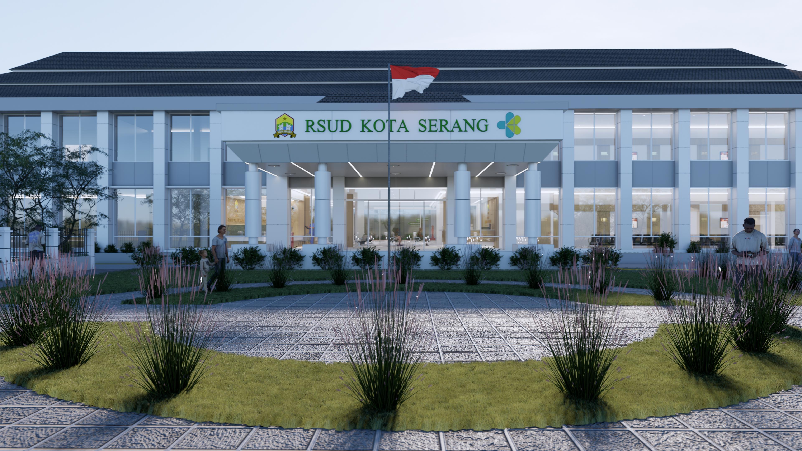
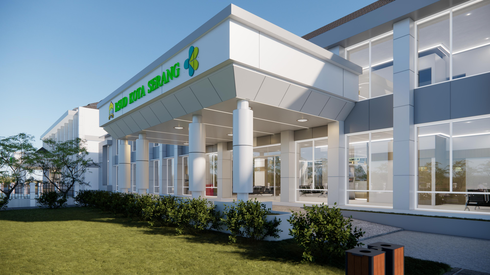

Visi dan Misi

Visi
Terwujudnya Rumah Sakit Yang Diminati Karena Pelayanan Yang Mumpuni
Misi
- Melayani masyarakat dengan sepenuh hati
- Meningkatkan pelayanan pada rawat jalan, rawat inap, dan fasilitas rujukan
- Meningkatkan fasilitas sarana dan prasarana rumah sakit
- Meningkatkan kompetensi sumber daya manusia
- Meningkatkan kepatuhan terhadap pelaksanaan SOP
Fasilitas

Tersedia layanan rawat jalan, rawat inap, medical checkup, dan fasilitas rujukan.
Beberapa layanan
spesialis yang
tersedia:
penyakit dalam, anak, bedah, kebidanan & kandungan, jantung, syaraf, THT, gigi, gizi, kesehatan
jiwa, mata, dan forensik.
Fasilitas
penunjang seperti ambulans, apotek, radiologi, laboratorium, rehabilitasi, UGD
24 jam, dan ICU/HCU/PICU/NICU.